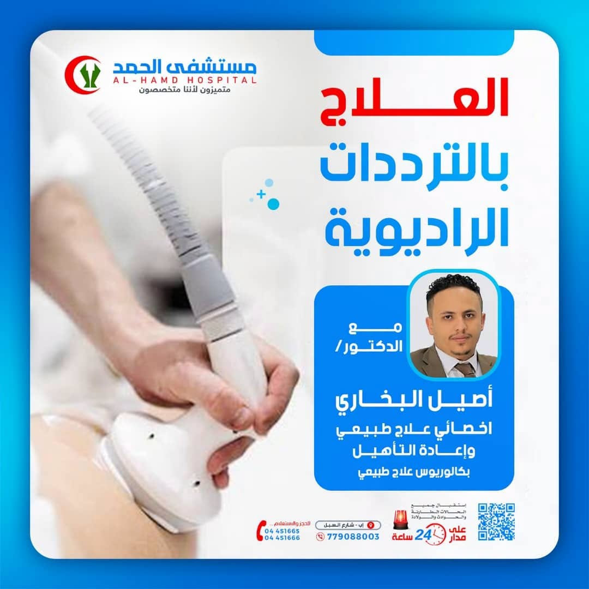

نسعى دائماً إلى تطوير تقديم الخدمات الطبية بأعلى مستوى. تم وصول جهاز الترددات الراديوية الحديث لعلاج آلام المفاصل والعضلات والإصابات الرياضية بدون تدخل جراحي وبنتائج فورية.

الدكتور أصيل البخاري هو أخصائي العلاج الطبيعي وإعادة التأهيل في مستشفى الحمد إب، يحمل شهادة البكالوريوس في العلاج الطبيعي، ويتمتع بخبرة واسعة في علاج آلام العضلات والمفاصل والإصابات الرياضية وإعادة التأهيل بعد العمليات والحوادث.
يستخدم الدكتور أحدث التقنيات والأجهزة الطبية المتطورة، بما في ذلك جهاز الترددات الراديوية، لتقديم علاج فعال وآمن يساعد المرضى على التعافي بشكل أسرع وتحسين جودة حياتهم.
نقدم مجموعة شاملة من الخدمات العلاجية بأحدث الأجهزة والتقنيات الطبية
تقنية متطورة وغير جراحية لعلاج آلام العضلات والمفاصل والإصابات الرياضية والتهابات الأوتار بشكل فعال وآمن.
علاج متخصص لآلام الرقبة، أسفل الظهر، مفصل الركبة والورك باستخدام أحدث التقنيات العلاجية.
برامج تأهيل متخصصة للتعافي من الالتواءات وتمزقات الأنسجة الرخوة وإعادة اللاعبين إلى المنافسة.
برامج تأهيل شاملة بعد العمليات الجراحية والحوادث لاستعادة الحركة والقوة بشكل تدريجي وآمن.
علاج حالات التهاب اللفافة الأخمصية، مرفق التنس، والتهابات الأوتار المزمنة بشكل فعال.
تخفيف آلام العضلات المزمنة والتشنجات باستخدام تقنيات علاجية متعددة وبرامج علاجية مخصصة.
العلاج بالترددات الراديوية فعال في معالجة مجموعة واسعة من الحالات المؤلمة
تخفيف آلام الرقبة، أسفل الظهر، ومفصل الركبة أو الورك بشكل فعال وطويل الأمد.
تسريع التعافي من الالتواءات وتمزقات الأنسجة الرخوة وإعادة الرياضيين للنشاط.
علاج التهاب اللفافة الأخمصية، مرفق التنس، وغيرها من التهابات الأوتار المؤلمة.
تقنية متطورة تقدم نتائج استثنائية دون الحاجة للتدخل الجراحي
غير مؤلمة ولا تتطلب أي تدخل جراحي، مما يجعلها خياراً آمناً للجميع.
توفر استرخاءً فورياً للعضلات وتسكيناً طويل الأمد للألم من الجلسة الأولى.
يمكن استخدامها للتعامل مع كل من الطبقات السطحية والعميقة للجسم بفعالية.
جلسات علاجية قصيرة لا تحتاج لفترة نقاهة، يمكن العودة للنشاط اليومي فوراً.
خطوات بسيطة للحصول على العلاج المناسب
اتصل على أرقامنا أو املأ نموذج الحجز عبر الموقع الإلكتروني
يقوم الدكتور بفحصك وتشخيص حالتك وتحديد خطة العلاج المناسبة
نبدأ بجلسات العلاج المتخصصة لمتابعة تقدمك حتى التعافي الكامل
متميزون لأننا متخصصون
نحن نسعى دائماً إلى تطوير تقديم الخدمات الطبية بأعلى مستوى. وجودة الخدمة الطبية ما نسعى إليه لتلبية حاجات مرضانا.
العنوان: محافظة إب - امتداد خط السبل
استقبال الطوارئ: 24 ساعة على مدار الأسبوع
لا تدع الألم يتحكم بحياتك. احجز موعدك مع أخصائي العلاج الطبيعي وإعادة التأهيل د. أصيل البخاري وابدأ رحلة التعافي اليوم.
احجز موعدك الآن